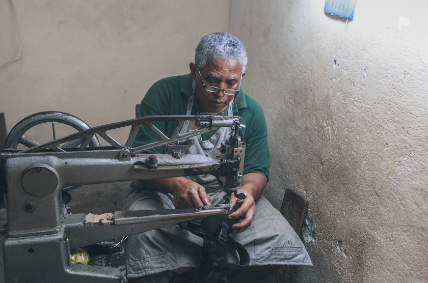
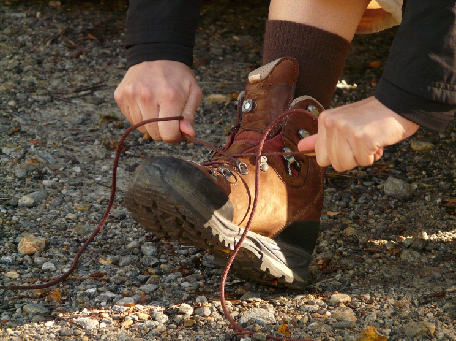
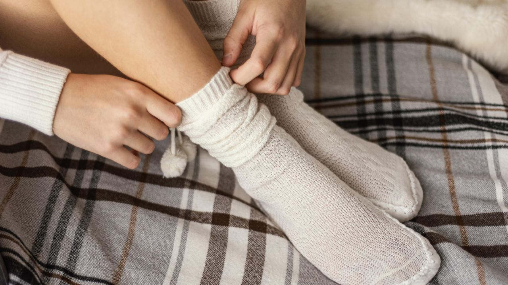
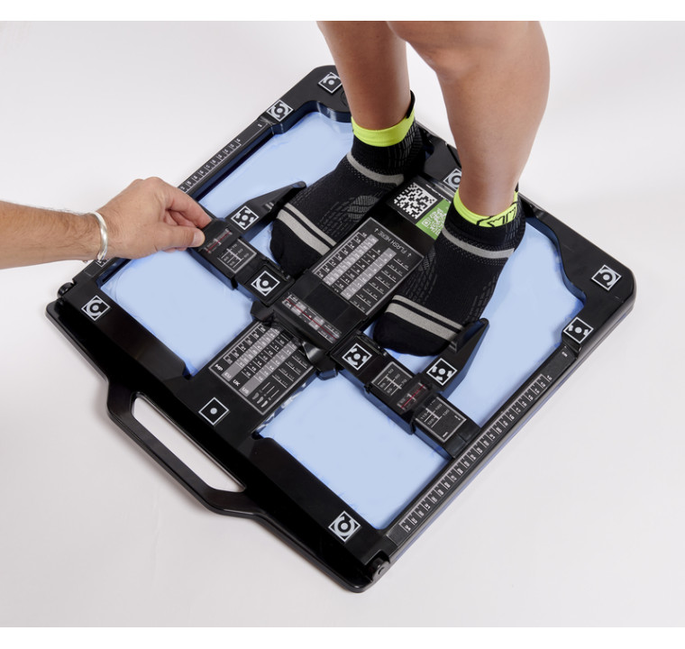
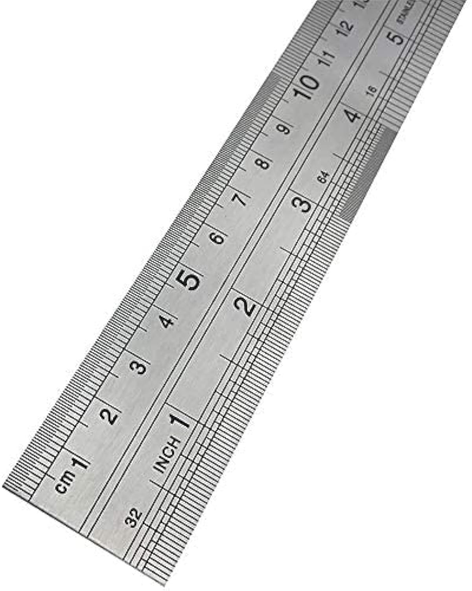
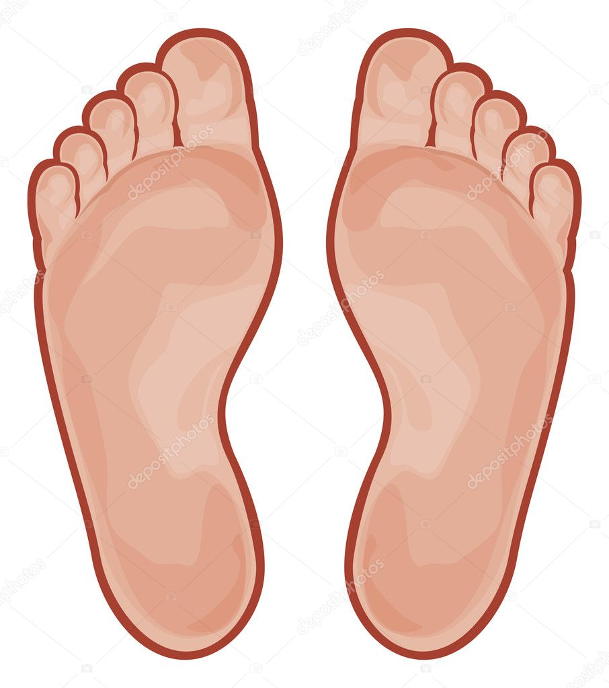
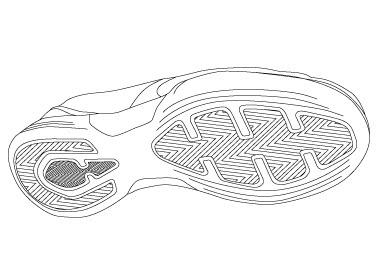

La toma de medidas

No existen dos pies que sean exactamente iguales. Por este motivo, a un zapatero solamente le es posible confeccionar zapatos cómodos de las medidas correspondientes cuando dispone de toda la información necesario sobre los dos pies del cliente. En la confección de un traje a medida, el sastre recomienda por lo menos dos o tres pruebas, mientras que el zapatero se las arregla con sólo una gracias al denominado zapato de prueba. Para ello es absolutamente necesario destinar suficiente tiempo a la toma de medidas, a ser posible de una a dos horas. Es muy frecuente que resulte difícil encontrar el momento en que puede conseguirse el resultado más preciso.
En condiciones normales, el tamaño que tiene el pie de un hombre saludable es constante a lo largo del día. Sin embargo, puede sufrir cambios causados por la temperatura (por ejemplo, si hace un calor considerable) o por el esfuerzo que haya realizado durante el transcurso del día (haber caminado o practicado deporte durante horas). Por esta razón, las horas más recomendables para realizar la toma de medidas del pie son las de la mañana.
Además algunas enfermedades provocan la hinchazón de los pies. Si el tratamiento debe terminar en un período previsible de tiempo, después del cual los pies recuperarán su forma original, el cliente debería esperar hasta ese momento para llevar a cabo la toma de medidas. En cambio, si se trata de una enfermedad crónica, los zapatos agrandados pueden aliviar el caminar del cliente.
En caso de malformaciones, como por ejemplo dedos en martillo o callosidades en los laterales, el zapatero afronta la confección de los zapatos de acuerdo con cada caso que se le presente. Sin embargo, es recomendable someterse a una pequeña operación ortopédica y a continuación encargar unos cómodos zapatos a medida.
En cualquier caso, es interesante asistir a una podóloga antes de la toma de las medidas para evitar molestias tales como uñeros, matrices hinchadas o dolorosos ojos de gallo. También es recomendable llevar medias finos para que las medidas resulten lo más exactas posibles.
La toma de medidas para confeccionar unos zapatos es una especie de ceremonia en la que el momento correcto, la duración, las eventuales molestias y toda la información que se pueda obtener sobre el cliente son de suma importancia. Las maniobras del zapatero siguen, por decirlo de algún modo, un ritual y un orden establecido. Dicha ceremonia se convierte en requisito básico para la construcción de una horma que sustituirá al pie con la máxima perfección durante la confección del zapato y que permitirá al zapatero crear una auténtica obra de arte.

El zapatero toma las medidas de la longitud, la anchura, la altura y el contorno del pie desde dos posiciones distintas: en primer lugar, mientras el pie aguanta el peso del cuero y, posteriormente, en estado relajado. Cuando la persona está de pie, la anchura del pie puede registrar una diferencia de casi un centímetro respecto a la posición sedente; además, el arco disminuye y los nervios y los músculos se tensan. Dicha posición refleja aproximadamente el estado en que se encuentra el pie cuando camina soportando una fuerte carga. De manera inevitable, el zapato se ensancha al caminar, asó como también a consecuencia del calor y de la humedad que produce el pie. Si el zapatero asumiera que las medidas de la posición de carga son las "reales", la alegría del cliente (los zapatos resultarían comodísimos desde el primer momento) se transformaría en decepción al transcurrir unos días: los zapatos se ensancharían demasiado y los arrastraría
En las medidas que se toman mientras el cliente está sentado surge una imagen contraria: el pie es "más pequeño". A pesar de ello, un gran número de zapateros considera que dichas medidas son las más importantes, puesto que permiten calcular mejor la anchura cambiante del pie al caminar y la posible dilatación del zapato durante su utilización.
La primera fase de la toma de medidas consiste en la inspección del pie para poder determinar su forma: siguiendo un eje longitudinal imaginario se comprueba si el pie tiende hacia el exterior o hacia el interior, si el arco interior longitudinal es pronunciado o no, la situación del tobillo, si el talón es débil o fuerte, cómo son los laterales y el empeine o si existen deformidades características como por ejemplo, pie plano, metatarso acentuado, quinto dedo prominente, dedos en martillo o pulgar saliente. para ello es necesario palpar con precisión la forma y el contorno del pie. El zapatero observa la forma de caminar del cliente, que puede estar considerablemente influida por el peso corporal o por hábitos inconscientes. Hay personas que pisan con ligereza y otras que andan pesadamente. Por todos estos motivos, el zapatero estudia también los zapatos viejos y sus malformaciones muy atentamente (cómo y hacia qué lado se decanta el zapato, en qué punto se han gastado la suela y el talón), puesto que pueden proporcionar importantes indicaciones para la confección del nuevo zapato.
Finalmente, el zapatero habla con el cliente. En general, la mayoría de la gente no sabe cómo son sus pies, simplemente se queja de que "los zapatos le aprietan el pulgar", o de que "todos los zapatos son demasiado estrechos". De esta forma, surge información adicional importante para determinar el tamaño y la forma de los nuevos zapatos. Las personas que sufren diabetes o tienen mala circulación no pueden llevar zapatos estrechos, por lo que las medidas de su calzado deben ser algo más "holgadas".
El pie: contorno, longitud, anchura y volumen
El contorno del pie

En zapatería existe una regla de oro para la confección del calzado: cuanto más sencillo es el instrumento de medición, más fiables son sus resultados. Incluso en los talleres más exigentes bastan dos tacones, dos hojas de papel, una cinta métrica para zapateros, un cartabón y un lápiz, además de un instrumento para medir la longitud del pie y de los utensilios necesarios para obtener una impresión de la planta del pie (papel de copiado o pedígrafo)
Para determinar la longitud del pie y anchura de los zapatos a confeccionar se requiere el esquema del contorno del pie. Lápiz y papel deben permanecer en un ángulo de 90º. Si el ángulo fuera menos o el zapatero "dibujase por debajo", tal como se dice popularmente, el resultado obtenido sería un zapato un número menor de lo planeado. El zapatero traza la línea a partir del talón, pasando por la parte interior y hasta el pulgar. Luego sigue por la parte exterior y vuelve al talón. Durante el proceso se presionan los dedos para que alcancen toda su longitud. Puesto que el pie derecho y el izquierdo nunca son del todo idénticos, debe sacarse el contorno de cada pie.
Una vez completado el dibujo del contorno, el zapatero marca la situación de la primera y la quinta falange de los metatarsianos, los puntos más prominentes de los laterales exterior e interior, así como el talón, para preparar la medición de la punta del pie y de la anchura del talón.
Longitud y anchura del pie
A partir del contorno del pie pueden medirse la longitud y la anchura del pie, con ayuda de la cinta métrica de zapatero. esta consiste en una cinta textil indeformable con distintas medidas a cada lado.
En una cara, se encuentra la escala de puntos, con la cual puede medirse la longitud del pie. Tradicionalmente muestra la numeración francesa o puntos parís, en la que una unidad representa 2/3 de centímetro: 6,667 mm. El zapatero añade un número y medio al resultado de la medición. Así pues, si las mediciones se corresponden con el número 41, los zapatos deben confeccionarse con el número 42,5, puesto que al caminar es pie se extiende casi 1,5 cm. Evidentemente, es importante para la comodidad que el pie no se encuentre limitado por delante al andar. Además, debería tener suficiente espacio para moverse en el interior del zapato.
En la otra cara de la cinta métrica se encuentran las divisiones más pequeñas correspondientes al sistema métrico (centímetros y milímetros). Con dichas unidades se mide el punto más ancho del pie, es decir, la distancia entre los laterales interior y exterior. Ello se hace partiendo de los puntos marcados en el dibujo del contorno del pie.
Finalmente, se comprueban las medidas con el instrumento de medición, sobre cuya superficie figuran las escalas para medir la longitud y el ancho del pie. Después de colocar el pie sobre el aparato y desplazar el talón contra el apoyo correspondiente, el zapatero mide la longitud del pie con la escala. Gracias a unos pasadores laterales (uno se desplaza horizontalmente sobre unos rieles y el otro verticalmente) se determina la anchura del piel

Con la ayuda de un instrumento de medición se controla la numeración de la longitud y de la anchura. El instrumento de la fotografía muestra la escala inglesa.

El pie debe situarse sobre el instrumento de medición con el talón apoyado en su extremo. Además, deben presionarse los dedos contra el suelo para tomar las medidas correctas.

La cinta métrica del zapatero muestra dos escalas: una mide la longitud de pie en puntos París (una unidad son 6,66mm) y la otra la anchura y el volumen del pie con el sistema métrico, es decir, en centímetros y milímetros.
El volumen del pie
Para medir el volumen se utiliza el lado de la cinta que muestra el sistema métrico. para la medición del ancho de los metatarsianos, el zapatero coloca la cinta en los puntos donde el lateral exterior y el interior sobresalen más. para ello coloca la cinta de forma algo oblicua por debajo de la planta. Unos 5 o 6 cm. más arriba, en dirección hacia el tobillo, mide el contorno del empeine. Seguidamente toma las medidas del talón. Para ello coloca la cinta sobre el hueso del tobillo y rodea el talón. para la confección de botas o botinas, el zapatero debe medir también el contorno del tobillo colocando la cinta alrededor de la pierna por debajo del maléolo.
El pie: huella y perspectiva
La huella
Tras realizar el dibujo del contorno, se toma la huella del pie con el pedígrafo, que transmite una imagen precisa del puente y refleja los puntos de cruce de los arcos y la situación de los dedos.
Se pinta con tinta uno de los lados de una esterilla de goma de textura muy apretada. A continuación se coloca un papel sobre la superficie pintada. La toma de la huella se realiza en posición sentada, aunque se presiona ligeramente cada pie sobre el aparato. Cuando el peso del cuerpo se sitúa sobre la planta del pie, el color de la estera se transmite al papel; en los puntos donde se soporta más peso, el color se oscurece. Al confeccionar la horma, el hormero reproduce las manchas como ligeros abultamientos en la suela.
Los arcos longitudinales y latitudinales perfectos apenas dejan huellas, pero si toda superficie de la suela está cubierta de color, ello indica una de las deformaciones más corrientes: el hundimiento del puente.
Este tipo de hundimiento puede ser contrarrestado con el uso temprano de plantillas correctoras y con zapatos cómodos de buena confección. Por este motivo, para el zapatero es muy importante formarse una imagen precisa del estado del puente.
Con el pedígrafo se obtiene la huella del pie.

Situados uno junto a otro, los pies forman una bóveda en forma de cúpula

La línea que une el dedo pulgar con el talón determina la longitud real del pie.
En una cara, se encuentra la escala de puntos, con la cual puede medirse la longitud del pie. Tradicionalmente muestra la numeración francesa o puntos parís, en la que una unidad representa 2/3 de centímetro: 6,667 mm. El zapatero añade un número y medio al resultado de la medición. Así pues, si las mediciones se corresponden con el número 41, los zapatos deben confeccionarse con el número 42,5, puesto que al caminar es pie se extiende casi 1,5 cm. Evidentemente, es importante para la comodidad que el pie no se encuentre limitado por delante al andar. Además, debería tener suficiente espacio para moverse en el interior del zapato.
En la otra cara de la cinta métrica se encuentran las divisiones más pequeñas correspondientes al sistema métrico (centímetros y milímetros). Con dichas unidades se mide el punto más ancho del pie, es decir, la distancia entre los laterales interior y exterior. Ello se hace partiendo de los puntos marcados en el dibujo del contorno del pie.
Finalmente, se comprueban las medidas con el instrumento de medición, sobre cuya superficie figuran las escalas para medir la longitud y el ancho del pie. Después de colocar el pie sobre el aparato y desplazar el talón contra el apoyo correspondiente, el zapatero mide la longitud del pie con la escala. Gracias a unos pasadores laterales (uno se desplaza horizontalmente sobre unos rieles y el otro verticalmente) se determina la anchura del piel
Con la ayuda de un instrumento de medición se controla la numeración de la longitud y de la anchura. El instrumento de la fotografía muestra la escala inglesa.
El pie debe situarse sobre el instrumento de medición con el talón apoyado en su extremo. Además, deben presionarse los dedos contra el suelo para tomar las medidas correctas.
La cinta métrica del zapatero muestra dos escalas: una mide la longitud de pie en puntos París (una unidad son 6,66mm) y la otra la anchura y el volumen del pie con el sistema métrico, es decir, en centímetros y milímetros.
Perspectiva
El contorno lateral proporciona información adicional sobre la forma del pie. El zapatero sitúa un tacón de la altura que tendrá el del nuevo zapato bajo el pie, que a su vez descansa sobre la hoja con las medidas. De esta forma, el pie adopta la posición que tomará una vez dentro del zapato. A continuación, coloca un papel perpendicularmente al pie para reproducir la imagen lateral. Dicha imagen mostrará la altura de los dedos., los abultamientos del empeine y la curvatura del talón. La imagen del talón resulta de gran ayuda para la determinación de la anchura del tacón y del tipo de zapato. Además, la altura del tobillo proporciona información adicional al zapatero, puesto que puede influenciar la altura y la constitución de la pala del zapato.
Una vez determinado el contorno y la huella del pie, sus distintos aspectos y puntos críticos, el zapatero marca los puntos en que el pie del cliente se diferencia de la media sobre la horma provisional, que servirá para confeccionar la horma a medida.
El contorno lateral registra la altura de los dedos y del empeine
Esta perspectiva del pie refleja la forma del talón
La altura del tobillo es importante para la confección de botas y zapatos.
Se comprueban de nuevo todas las medidas.
{kind=link}
{kind=link}
{kind=link}
{kind=link}
{kind=link}
{kind=link}
{kind=link}
{kind=link}
{kind=link}
{kind=link}
{kind=link}
{kind=link}
{kind=link}
{kind=link}
{kind=link}
{kind=link}
{kind=link}
{kind=link}
{kind=link}
{kind=link}
{kind=link}
{kind=link}
{kind=link}
{kind=link}
{kind=link}
{kind=link}
{kind=link}
{kind=link}
{kind=link}
{kind=link}